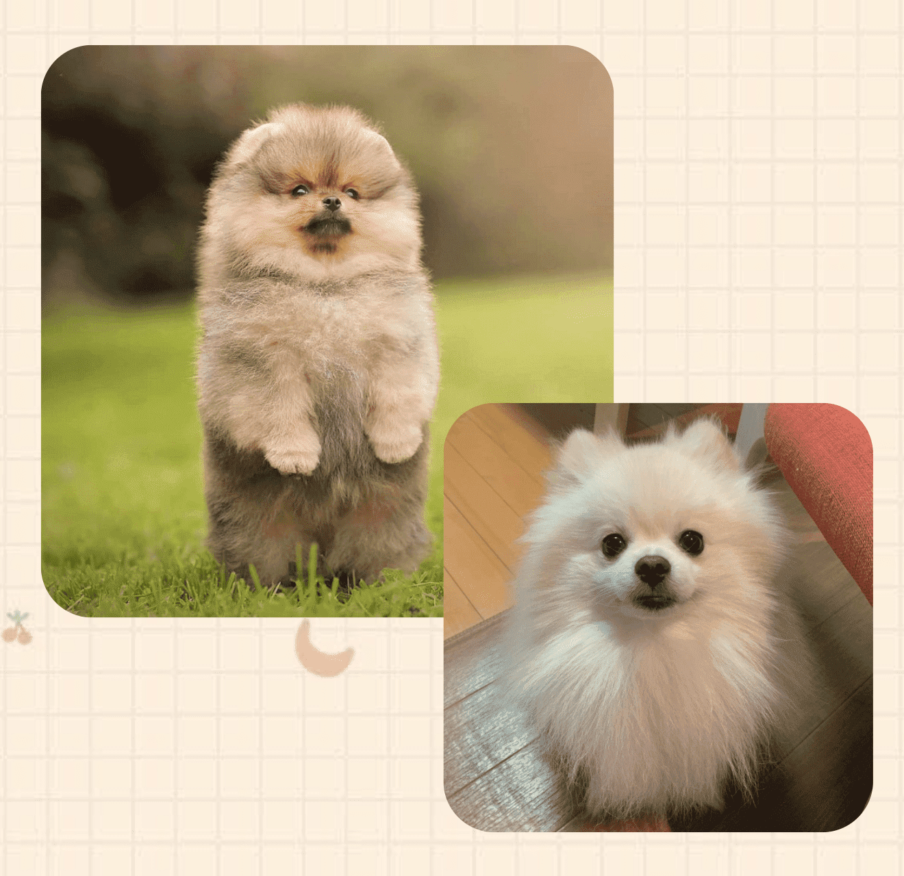

博美犬
（英語：Pomeranian）
是狐狸犬家族中最小的犬種，其名出自原產地波美拉尼亞
頭部：契形，使牠看起來有著狐貍臉
毛色：白、偏黃奶油、花色、黑、紅、棕等。
尾巴：向上翹起到背部。
額段：鼻樑到頭部之間，呈現的是90度以上的直角
身體：身體總體上像個球形，前肢略高於後肢，背部直而短。
雙層毛：下毛非常柔軟，上毛直而粗，胸部長滿裝飾毛，前胸的裝飾毛很長，很寬，而且毛量很大。

適合城市養
博美犬的體型比較小，活動空間小，對於飼養的環境空間要求就沒有那麼大，對於居住在城市的人們來說，博美犬很適合在城市中飼養。
能看家
博美犬對周圍的環境都會帶有一定的警惕，而且雖然博美體型不大，但牠卻不膽小，能成為你的最佳看門犬和護衛犬。
善解人意
博美犬很善解人意和特別善於傾聽，你要是有不開心或不爽的事情都可以跟博美犬訴說，它會乖乖的呆在你身邊靜靜的聆聽著你的訴說。
不挑食
博美犬很好飼養，不挑食，但是餵食也不能太隨便哦，餵食過量容易導致狗狗肥胖，營養不良，


毛髮護理
博美犬的毛是雙層，平時的護理也是非常重要的，主人需要每天幫狗狗梳理毛髮，最好早晚各一次。
適當運動
博美犬不需要大量的運動，但是少量的運動還是不可少的。適量的運動可以促進博美犬健康發育，促進新陳代謝。
日常訓練
博美犬狗狗智商很高，家長訓練起來也是相對容易的。但是仍然需要注意的是，如果狗狗能夠做出主人要求的動作時，可以馬上給予一些小零食，這樣狗狗就會記得，下次會做得更好。
飲食注意
博美犬是比較容易有淚痕的，所以狗狗不能吃太鹹，最好是吃一些帶有深海魚油的，清淡的天然糧。

內分泌問題
博美犬體內技能較弱，會出現內分泌失調的情況，導致博美犬經常出現肌膚炎症，顧博美是對整潔要求非常高的犬種。
骨折
由於純種博美的基因缺陷，博美的骨頭比較脆弱，特別是前肢，很容出現骨折，後肢也比較容易出現關節脫臼的問題，
所以，在博美跑跑跳跳的時候，飼主要多加注意，另外，在飲食上，也要注意營養均衡，補充鈣質。
白內障/視網膜萎縮
因為純種博美血液循環並不十分順暢，所以博美的眼睛也會出現一些問題。
在日常的飲食上最好以清淡為主，另外要定期給狗狗做體檢，以防患於未然。
開放性動脈導管疾病
在血液的循環過程中，當血液被運送到心臟主動脈和肺動脈時，有可能會被運送到一條不正常的血管之中，
導致狗狗發生含氧血和缺氧學混合的情況，以致於出現心血管方面的問題。
氣管塌陷
當博美步入中老年的階段，就會出現氣管塌陷的問題，隨之也會引起咳嗽等問題，如果博美在中老年階段出現咳嗽跡象而且前期沒有任何能夠引起感冒的動機，請儘快帶狗狗就醫。